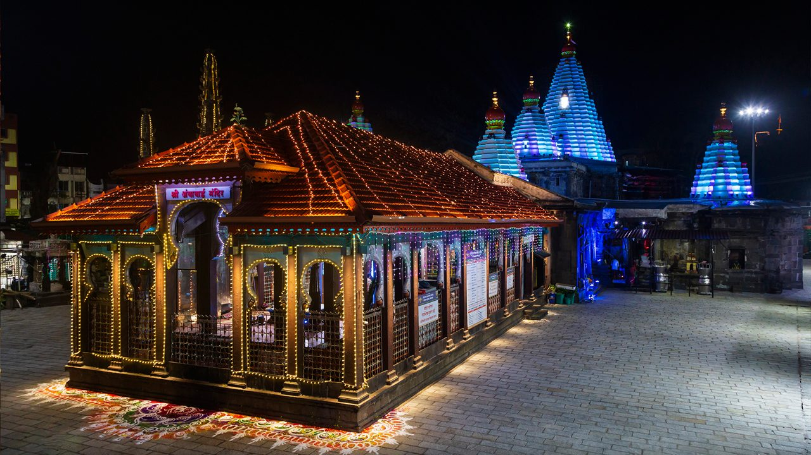
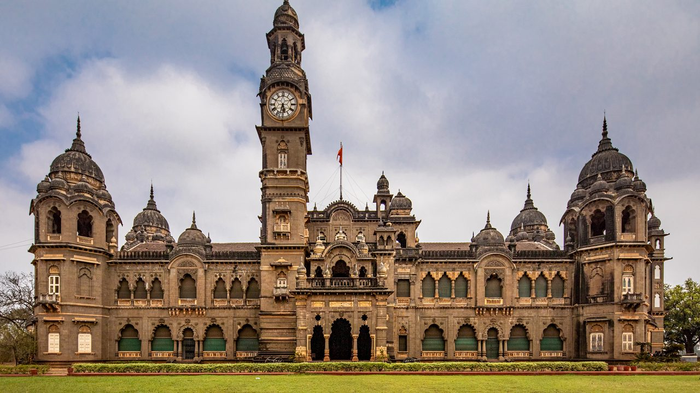
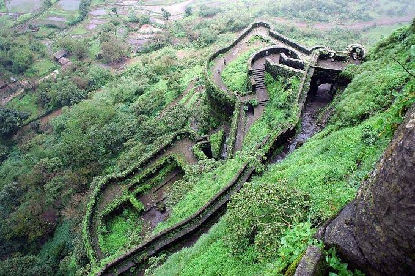
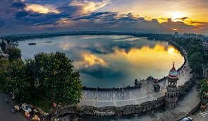
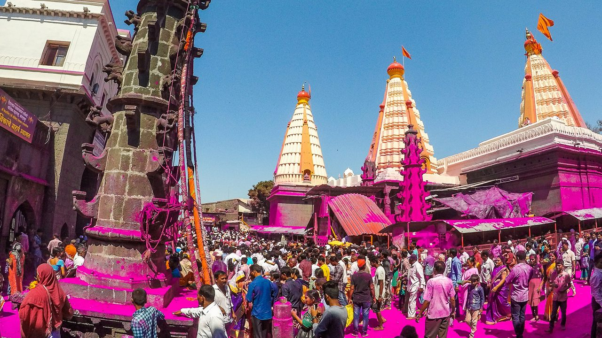
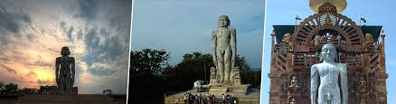
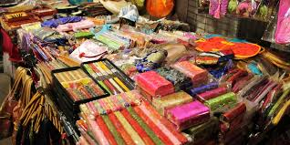

Mahalaxmi Temple: The Divine Abode
Mahalaxmi Temple is a revered Hindu temple located in Kolhapur, dedicated to Goddess Mahalaxmi.
Fun Fact:
~It is one of the Shakti Peethas and holds immense religious significance!
Things to Explore at Mahalaxmi Temple:
-
The Architecture:
Marvel at the intricate carvings and stunning architecture of the temple.
-
The Rituals:
Witness the daily rituals and ceremonies performed by the priests.
-
The Sacred Pond:
Visit the sacred pond adjacent to the temple for a spiritual experience.
-
The Local Markets:
Explore the nearby markets for souvenirs and religious artifacts.
-
The Festivals:
Experience the vibrant festivals celebrated with great fervor at the temple.
Why Visit Mahalaxmi Temple?
!Because it’s not just a temple, but a divine abode that offers a glimpse into the rich spiritual heritage of India!

Kolhapur Palace: A Royal Heritage
Kolhapur Palace is a historical palace located in Kolhapur, known for its royal architecture and rich history.
Fun Fact:
~It was the residence of the Bhonsle dynasty and showcases the grandeur of Maratha architecture!
Things to Explore at Kolhapur Palace:
-
The Museum:
Visit the museum inside the palace to learn about the history and artifacts of the Bhonsle dynasty.
-
The Architecture:
Admire the stunning architecture and intricate carvings of the palace.
-
The Gardens:
Stroll through the beautiful gardens surrounding the palace.
-
The Local Cuisine:
Savor local delicacies available at nearby eateries.
-
The Festivals:
Experience the vibrant festivals celebrated in and around the palace.
Why Visit Kolhapur Palace?
!Because it’s not just a palace, but a royal heritage that offers a glimpse into the glorious past of Maharashtra!

Panhala Fort: A Historical Marvel
Panhala Fort is a historic fort located near Kolhapur, known for its strategic significance and stunning views.
Fun Fact:
~It is one of the largest forts in the Deccan region and has a rich history dating back to the 12th century!
Things to Explore at Panhala Fort:
-
The Fort Walls:
Walk along the fort walls and enjoy panoramic views of the surrounding landscape.
-
The Temples:
Visit the ancient temples within the fort complex, dedicated to various deities.
-
The History:
Learn about the historical significance of the fort and its role in Maratha history.
-
The Trekking Trails:
Explore the trekking trails leading to the fort for an adventurous experience.
-
The Local Cuisine:
Savor local delicacies available at nearby stalls and eateries.
Why Visit Panhala Fort?
!Because it’s not just a fort, but a historical marvel that offers a glimpse into the glorious past of Maharashtra!

Dajipur Wildlife Sanctuary: A Nature Lover's Paradise
Dajipur Wildlife Sanctuary is a beautiful wildlife sanctuary located near Kolhapur, known for its rich biodiversity and scenic beauty.
Fun Fact:
~It is home to various species of flora and fauna, including the endangered Indian bison!
Things to Explore at Dajipur Wildlife Sanctuary:
-
The Wildlife:
Spot various wildlife species, including deer, leopards, and birds.
-
The Scenic Beauty:
Enjoy the picturesque views of the hills, valleys, and forests.
-
The Trekking Trails:
Explore the trekking trails for an adventurous experience.
-
The Photography:
Capture stunning photographs of the wildlife and natural beauty.
-
The Local Cuisine:
Savor local delicacies available at nearby eateries.
Why Visit Dajipur Wildlife Sanctuary?
!Because it’s not just a sanctuary, but a nature lover's paradise that offers a perfect escape into the wilderness!

Rankala Lake: A Serene Escape
Rankala Lake is a picturesque lake located in Kolhapur, known for its serene ambiance and scenic beauty.
Fun Fact:
~It is a popular spot for boating and offers stunning views of the surrounding hills!
Things to Explore at Rankala Lake:
-
The Boating:
Enjoy boating in the tranquil waters of the lake.
-
The Scenic Views:
Marvel at the beautiful views of the lake and the surrounding landscape.
-
The Local Cuisine:
Savor local snacks and refreshments available at nearby stalls.
-
The Walking Trails:
Stroll along the walking trails around the lake for a peaceful experience.
-
The Photography:
Capture stunning photographs of the lake and its surroundings.
Why Visit Rankala Lake?
!Because it’s not just a lake, but a serene escape into nature’s tranquility!

Jotiba Temple: A Spiritual Retreat
Jotiba Temple is a revered Hindu temple located near Kolhapur, dedicated to Lord Jotiba, an incarnation of Lord Shiva.
Fun Fact:
~It is situated on a hilltop and offers panoramic views of the surrounding landscape!
Things to Explore at Jotiba Temple:
-
The Architecture:
Admire the stunning architecture and intricate carvings of the temple.
-
The Rituals:
Witness the daily rituals and ceremonies performed by the priests.
-
The Scenic Views:
Enjoy the breathtaking views of the hills and valleys from the temple premises.
-
The Local Markets:
Explore the nearby markets for souvenirs and religious artifacts.
-
The Festivals:
Experience the vibrant festivals celebrated with great fervor at the temple.
Why Visit Jotiba Temple?
!Because it’s not just a temple, but a spiritual retreat that offers a glimpse into the rich spiritual heritage of India!

Bahubali Statue: A Marvel of Art
The Bahubali Statue is a colossal statue located in Kolhapur, dedicated to Lord Bahubali, a revered figure in Jainism.
Fun Fact:
~It is one of the tallest statues of Lord Bahubali in India!
Things to Explore at Bahubali Statue:
-
The Architecture:
Marvel at the intricate carvings and stunning architecture of the statue.
-
The Scenic Views:
Enjoy the picturesque views of the surrounding hills and valleys.
-
The Local Cuisine:
Savor local delicacies available at nearby eateries.
-
The Photography:
Capture stunning photographs of the statue and its surroundings.
-
The Spiritual Experience:
Experience the spiritual ambiance and tranquility around the statue.
Why Visit Bahubali Statue?
!Because it’s not just a statue, but a marvel of art that offers a perfect blend of spirituality and natural beauty!

Kolhapur Zoo: A Family-Friendly Destination
Kolhapur Zoo is a popular zoo located in Kolhapur, known for its diverse collection of animals and family-friendly atmosphere.
Fun Fact:
~It is home to various species of animals, including tigers, lions, and elephants!
Things to Explore at Kolhapur Zoo:
-
The Animal Exhibits:
Explore the various animal exhibits and learn about different species.
-
The Children's Park:
Let your kids enjoy the play area while you relax in the zoo.
-
The Scenic Beauty:
Enjoy the lush greenery and picturesque landscapes within the zoo.
-
The Local Cuisine:
Savor local snacks and refreshments available at nearby stalls.
-
The Educational Programs:
Participate in educational programs and workshops organized by the zoo.
Why Visit Kolhapur Zoo?
!Because it’s not just a zoo, but a family-friendly destination that offers a delightful experience for all ages!

Kolhapur Market: A Shopper's Paradise
Kolhapur Market is a bustling market located in the heart of Kolhapur, known for its vibrant atmosphere and diverse shopping options.
Fun Fact:
~It is famous for its Kolhapuri chappals, a traditional footwear made from leather!
Things to Explore at Kolhapur Market:
-
The Local Handicrafts:
Shop for unique handicrafts, textiles, and souvenirs.
-
The Local Cuisine:
Savor local delicacies available at various food stalls.
-
The Vibrant Atmosphere:
Experience the lively ambiance and bustling crowds of the market.
-
The Cultural Heritage:
Learn about the rich cultural heritage of Kolhapur through its local products.
-
The Bargaining:
Engage in bargaining with local vendors for the best deals!
Why Visit Kolhapur Market?
!Because it’s not just a market, but a shopper's paradise that offers a perfect blend of culture, cuisine, and commerce!